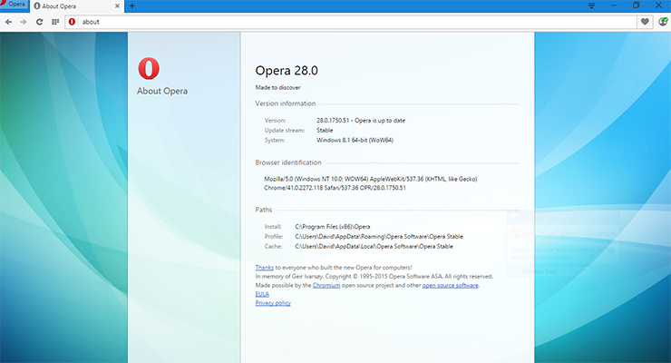

| Логотип | Название | Разработчик | Ссылка |
| Opera | Opera Software | http://www.opera.com/ |
 Opera — веб-браузер и пакет прикладных программ для работы в Интернете, выпускаемый компанией Opera Software. Разработан в 1994 году группой исследователей из норвежской компании Telenor. С 1995 года — продукт компании Opera Software, образованной авторами первой версии браузера. Суммарная рыночная доля Opera и Opera Mobile в апреле 2014 года составила 1,37 % — пятое место в мире.